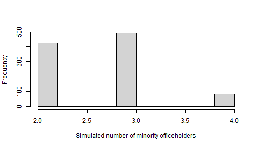

Application 3: jurisdiction-level counts
Motivating example: at-large versus district elections (Online Appendix C.4)
Online
Appendix C.4 of Atsusaka (2021) considers a jurisdiction with six
seats and a jurisdiction-wide minority share of 47.5%. It compares an
at-large arrangement with six single-member districts whose minority
shares are c(50, 40, 60, 30, 50, 80) and whose adjusted
racial margins are c(30, 40, 50, 65, 70, 30). Under this
hypothetical comparison, the simulations concentrate on zero minority
officeholders at large and two or three under district elections.
minorep() supplies the seat-level probabilities and
n_minorep() converts them into a distribution of counts,
using independent draws across seats. The district component can be
reproduced directly from the appendix inputs:
appendix_M <- c(30, 40, 50, 65, 70, 30)
appendix_C <- c(50, 40, 60, 30, 50, 80)
appendix_prediction <- minorep(M = appendix_M, C = appendix_C)
appendix_counts <- n_minorep(
model_pred = appendix_prediction, n_sim = 1000, seed = 2026
)
prop.table(table(appendix_counts))
#> appendix_counts
#> 2 3
#> 0.836 0.164The electoral-rule comparison is conditional on the voting assumptions and the independence of seat outcomes. It does not by itself establish legal vote dilution. The example below illustrates the same workflow with a different set of district margins.
Simulating jurisdiction totals
n_minorep() converts district-level probabilities into
simulated counts of minority officeholders across a jurisdiction. It
makes independent Bernoulli draws for each district in every
simulation.
district_M <- c(50, 40, 40, 35, 70, 85)
district_C <- c(50, 40, 60, 30, 50, 80)
district_prediction <- minorep(M = district_M, C = district_C)
count_draws <- n_minorep(
model_pred = district_prediction,
n_sim = 1000,
seed = 2026
)
summary(count_draws)
#> Min. 1st Qu. Median Mean 3rd Qu. Max.
#> 2.000 2.000 3.000 2.659 3.000 4.000n_sim controls the number of returned draws. Supplying
seed makes the result reproducible without changing the
caller’s random-number state.
Inspect the simulation distribution
hist(
count_draws,
xlab = "Simulated number of minority officeholders",
main = ""
)
The distribution represents uncertainty implied by the supplied district-level probabilities. It should be interpreted alongside the assumptions used to construct those probabilities.